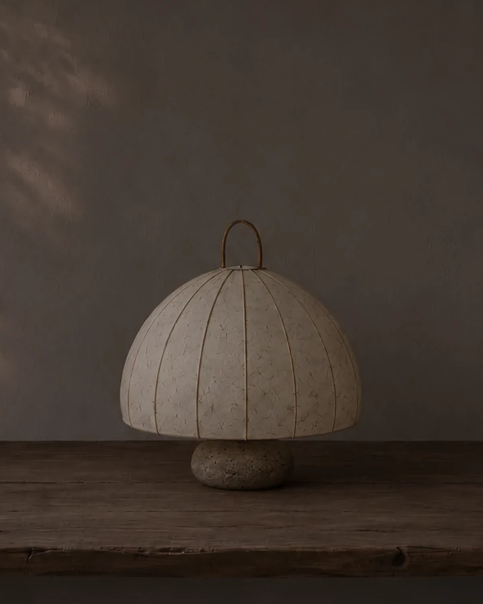

정하은 님은 작은 집에 혼자 살아요. 창가와 방 구석에 한지 조명을 하나씩 두고 이 년째 쓰고 있어요. 퇴근하면 천장등보다 조명부터 켜요.
- 주로 언제 켜세요?
- 집에 오면 가방을 내려놓고 바로 켜요. 천장등은 거의 안 켜게 됐어요. 빛이 닿는 곳까지만 밝으니까, 저절로 그 안에 앉게 돼요.
- 쓰면서 달라진 점이 있나요?
- 저녁이 느려졌어요. 휴대폰을 내려놓고 책을 펴는 날이 늘었어요. 불을 끄고 나서도 방에 빛이 조금 남아 있는 것 같아요.

- 낮에는 어떤가요?
- 꺼져 있을 때도 좋아요. 창으로 들어온 햇빛에 한지 결이 보여요. 이 년 전보다 조금 누래졌는데, 그게 마음에 들어요.
- 아쉬운 점이 있다면요?
- 켜 두면 끄기 아까워서 늦게 자는 날이 있어요. 그게 제일 큰 문제예요.
켜 두면 저녁이 길어져요.
이 인터뷰는 가상 브랜드를 위해 지어낸 글이에요. 인물도 가상이에요.